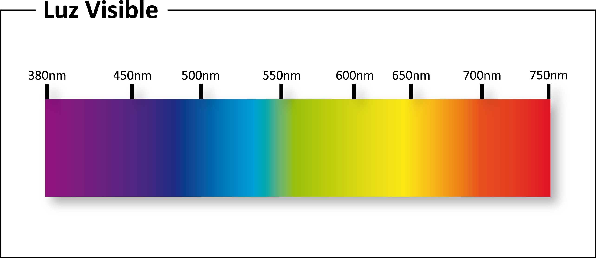
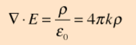
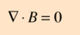
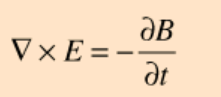
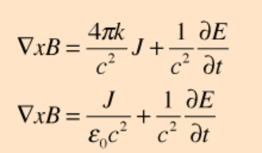

Contenido

Introducción a la Óptica
La óptica es una rama de la física que se ocupa del comportamiento de la luz, incluidas sus propiedades, generación y detección. Es un campo fundamental que tiene aplicaciones en diversas áreas como las telecomunicaciones, la medicina y la ingeniería. Esta investigación tiene como objetivo proporcionar una introducción a los principios de la óptica, incluida la naturaleza de la luz, la dualidad onda-partícula y el comportamiento de la luz en diferentes medios.
Naturaleza de la Luz
La luz es una forma de radiación electromagnética que viaja en ondas. Las propiedades de la luz, como la longitud de onda, la frecuencia y la velocidad, determinan su comportamiento e interacciones con la materia. La naturaleza ondulatoria de la luz es responsable de fenómenos como la difracción, la interferencia y la polarización. Sin embargo, la luz también exhibe un comportamiento similar al de las partículas, como lo demuestra el efecto fotoeléctrico, que es descrito por la mecánica cuántica.
Dualidad Onda-Partícula
La dualidad onda-partícula de la luz es un concepto fundamental en la óptica. Se refiere al hecho de que la luz exhibe propiedades tanto ondulatorias como partículas, dependiendo del contexto experimental. El comportamiento ondulatorio de la luz es responsable de fenómenos como la difracción y la interferencia, mientras que el comportamiento similar al de las partículas es responsable de fenómenos como el efecto fotoeléctrico. La dualidad onda-partícula de la luz está descrita por el principio de dualidad onda-partícula, que establece que cada partícula tiene una naturaleza ondulatoria y cada onda tiene una naturaleza partícula.
Comportamiento de la Luz en Diferentes Medios
El comportamiento de la luz en diferentes medios está determinado por el índice de refracción del medio. El índice de refracción es una medida de la velocidad de la luz en un medio dado en relación con la velocidad de la luz en el vacío. El índice de refracción determina el grado de curvatura que sufre la luz cuando pasa de un medio a otro, un fenómeno conocido como refracción. El índice de refracción también determina el ángulo crítico, que es el ángulo de incidencia en el cual ocurre la reflexión interna total.
Resultado:
Velocidad (v): m/s
Frecuencia (f): Hz
Longitud de onda (λ): metros
Introducción a la Óptica
El espectro electromagnético (EM) es un concepto fundamental en la física que describe el rango de frecuencias o longitudes de onda de la radiación electromagnética. Esta radiación incluye la luz visible, las ondas de radio y los rayos X, entre otros (Hertz, 1887). Comprender el espectro EM es crucial para una amplia gama de aplicaciones, desde las telecomunicaciones hasta la imagen médica. En esta investigación, exploraremos las diferentes regiones del espectro EM, sus propiedades y sus aplicaciones.
Las Regiones del Espectro Electromagnético
El espectro EM se divide en varias regiones basadas en la frecuencia o longitud de onda de la
radiación. Las siguientes son las principales regiones del espectro EM:
1. Ondas de Radio: Las ondas de radio tienen la frecuencia más baja y la longitud de onda más larga de cualquier radiación EM. Se utilizan para la comunicación, navegación y radiodifusión (Marconi, 1901).
2. Microondas: Las microondas tienen una frecuencia ligeramente más alta y una longitud de onda más corta que las ondas de radio. Se utilizan para la comunicación, cocción e imagen médica (Schawlow & Townes, 1958).
3. Radiación Infrarroja: La radiación infrarroja tiene una frecuencia más alta y una longitud de onda más corta que las microondas. Se utiliza para la imagen térmica, visión nocturna y comunicación (Herschel, 1800).
4. Luz Visible: La luz visible tiene una frecuencia más alta y una longitud de onda más corta que la radiación infrarroja. Se utiliza para iluminación, comunicación e imagen (Newton, 1672).
5. Radiación Ultravioleta: La radiación ultravioleta tiene una frecuencia más alta y una longitud de onda más corta que la luz visible. Se utiliza para desinfección, curado e imagen médica (Röntgen, 1895).
6. Rayos X: Los rayos X tienen una frecuencia más alta y una longitud de onda más corta que la radiación ultravioleta. Se utilizan para imagen médica, control de seguridad e investigación científica (Compton, 1923).
7. Rayos Gamma: Los rayos gamma tienen la frecuencia más alta y la longitud de onda más corta de cualquier radiación EM. Se utilizan para imagen médica, tratamiento de cáncer e investigación científica (Curie & Curie, 1898).

Propiedades de la Radiación Electromagnética
Propiedades
1. Frecuencia: La frecuencia de la radiación EM es el número de ciclos por segundo y se mide en
hertz (Hz).
2. Longitud de Onda: La longitud de onda de la radiación EM es la distancia entre dos picos
consecutivos de la onda y se mide en metros (m).
3. Velocidad: La velocidad de la radiación EM es la misma para todas las frecuencias y es igual
a la
velocidad de la luz, aproximadamente 299,792 kilómetros por segundo (km/s).
4. Polarización: La polarización de la radiación EM es la orientación del vector del campo
eléctrico
y puede ser lineal, circular o elíptica.

Aplicaciones de la Radiación Electromagnética
Aplicaciones
1. Comunicación: La radiación EM se utiliza para la comunicación a través de ondas de radio,
microondas y radiación infrarroja.
2. Imagen Médica: La radiación EM se utiliza para la imagen médica a través de rayos X,
ultrasonido
y resonancia magnética (MRI).
3. Ciencia e Investigación: La radiación EM se utiliza para la investigación científica y
análisis
en campos como la física, química y astronomía.
4. Industria y Manufactura: La radiación EM se utiliza para procesos industriales y de
manufactura
como soldadura, calentamiento y curado.
5. Seguridad y Defensa: La radiación EM se utiliza para aplicaciones de seguridad y defensa como
detección, identificación y comunicación.
Reflexión y Refracción de la Luz
La reflexión y refracción de la luz son conceptos fundamentales en la física que describen cómo se comporta la luz cuando encuentra diferentes superficies o medios. Estos fenómenos han sido estudiados durante siglos, con contribuciones tempranas de filósofos griegos antiguos y desarrollos posteriores por científicos notables como Ibn al-Haytham, René Descartes e Isaac Newton (Hecht, 2017).
Reflexión
Reflexión
La reflexión de la luz es el fenómeno en el que la luz rebota desde una superficie sin ningún cambio en su longitud de onda. El ángulo de incidencia, que es el ángulo entre el rayo de luz incidente y la normal (perpendicular) a la superficie, es igual al ángulo de reflexión, que es el ángulo entre el rayo de luz reflejado y la normal (Hecht, 2017). Esta relación se conoce como la Ley de Reflexión. La reflexión especular ocurre cuando la luz se refleja en superficies lisas, como espejos o metales pulidos, resultando en una imagen clara y definida. La reflexión difusa ocurre cuando la luz se refleja en superficies rugosas, como papel o pinturas mate, resultando en una imagen dispersa y menos definida (Hecht, 2017).
Refracción
Refracción
La refracción de la luz es el fenómeno en el que la luz cambia de dirección al pasar a través de diferentes medios, como de aire a agua o de vidrio a aire. Este cambio de dirección se debe al cambio en la velocidad de la luz al entrar en un nuevo medio. La cantidad de doblado depende de los índices de refracción de los dos medios y del ángulo de incidencia (Hecht, 2017). La Ley de Snell describe la relación entre los ángulos de incidencia y refracción y los índices de refracción de los dos medios: n1 sin θ1 = n2 sin θ2 donde n1 y n2 son los índices de refracción de los primeros y segundos medios, respectivamente, y θ1 y θ2 son los ángulos de incidencia y refracción, respectivamente (Hecht, 2017).
Reflexión Total Interna
La reflexión total interna ocurre cuando la luz viaja de un medio con un índice de refracción más alto a un medio con un índice de refracción más bajo y el ángulo de incidencia es mayor que el ángulo crítico. El ángulo crítico es el ángulo en el que el ángulo de refracción es de 90 grados, y se puede calcular usando la Ley de Snell: sin θc = n2 / n1 donde θc es el ángulo crítico (Hecht, 2017). La reflexión total interna tiene aplicaciones prácticas en la fibra óptica, donde permite la transmisión de luz a largas distancias a través de fibras de vidrio delgadas (Hecht, 2017).
Calculadora de Reflexión y Refracción de la Luz
Ondas Electromagnéticas
Las ondas electromagnéticas (ondas EM) son un tipo de onda que puede viajar a través del espacio y se caracterizan por sus componentes de campo eléctrico y magnético (Michalski, 2015). Estas ondas son cruciales en la transmisión de información, energía y radiación, y tienen una amplia gama de aplicaciones en varios campos, incluidos las telecomunicaciones, la medicina y la física. Esta investigación proporcionará un análisis en profundidad de las ondas electromagnéticas, incluyendo sus propiedades, tipos y aplicaciones.
Propiedades de las Ondas Electromagnéticas
Las ondas electromagnéticas son ondas transversales, lo que significa que sus componentes de campo eléctrico y magnético oscilan perpendicularmente a la dirección de propagación de la onda (Purcell & Morin, 2013). Estas ondas pueden describirse matemáticamente utilizando las ecuaciones de Maxwell, que describen el comportamiento de los campos eléctricos y magnéticos en el espacio libre (Griffiths, 2013). Los campos eléctrico y magnético de una onda electromagnética están relacionados entre sí, y la relación de sus amplitudes es constante, dada por la velocidad de la luz (Michalski, 2015).
Aplicaciones de las Ondas Electromagnéticas
Las ondas electromagnéticas tienen numerosas aplicaciones en varios campos. En telecomunicaciones, las ondas de radio y las microondas se utilizan para comunicación inalámbrica, mientras que la radiación infrarroja se utiliza para dispositivos de control remoto (Michalski, 2015). La luz visible se utiliza para iluminación e imagen, mientras que la radiación ultravioleta se utiliza para esterilización y desinfección (Michalski, 2015). Los rayos X se utilizan para la imagen médica, y los rayos gamma se utilizan para el tratamiento del cáncer (Michalski, 2015).
Luz Polarizada y No Polarizada
La luz polarizada y la luz no polarizada son dos conceptos fundamentales en el estudio de la óptica y la propagación de ondas. La luz polarizada es aquella en la que los vectores del campo eléctrico están confinados a un solo plano, mientras que la luz no polarizada es aquella con vectores del campo eléctrico que oscilan en múltiples planos (Hecht, 2017). Esta investigación proporcionará un análisis extenso de estos dos tipos de luz, incluyendo sus propiedades, diferencias y aplicaciones.
Luz Polarizada
La luz polarizada es aquella que ha sido filtrada para permitir solo vectores de campo eléctrico que oscilan en un solo plano para pasar a través. Esto se puede lograr mediante varios métodos, como el uso de un filtro polarizador o pasando la luz a través de un material polarizador como un cristal (Pedrotti & Pedrotti, 2017). La luz polarizada tiene varias propiedades únicas, incluyendo:
Luz Polarizada
Luz Polarizada
1. Ley de Malus: La Ley de Malus establece que la intensidad de la luz polarizada que pasa a
través de un segundo filtro polarizador es proporcional al cuadrado del coseno del ángulo entre
los ejes de transmisión de los dos filtros (Hecht, 2017).
2. Birrefringencia: La birrefringencia es el fenómeno donde un material tiene dos índices de
refracción diferentes para luz polarizada en diferentes direcciones. Esto puede llevar a la
separación de la luz polarizada en dos haces separados (Pedrotti & Pedrotti, 2017).
3. Doble Refracción: La doble refracción es el fenómeno donde un solo haz de luz se divide en
dos haces separados al pasar a través de un material birrefringente (Hecht, 2017).
Luz no Polarizada
Luz no Polarizada
1. Oscilación Aleatoria: Los vectores del campo eléctrico de la luz no polarizada oscilan en
direcciones aleatorias, resultando en ninguna polarización neta (Hecht, 2017).
2. Intensidad Impredecible: La intensidad de la luz no polarizada puede variar de manera
impredecible, ya que los vectores del campo eléctrico oscilan en diferentes direcciones
(Pedrotti & Pedrotti, 2017).
3. Ningún Plano Preferido: La luz no polarizada no tiene un plano preferido de polarización, ya
que los vectores del campo eléctrico oscilan en múltiples planos (Hecht, 2017).
Luz No Polarizada
La luz no polarizada es aquella con vectores de campo eléctrico que oscilan en múltiples planos. Este tipo de luz a menudo se refiere como luz no polarizada (Pedrotti & Pedrotti, 2017). La luz no polarizada tiene varias propiedades únicas, incluyendo:
Aplicaciones
La luz polarizada y no polarizada tienen varias aplicaciones prácticas, incluyendo:
1. Filtros Polarizadores: Los filtros polarizadores se utilizan en fotografía para reducir el
deslumbramiento y mejorar el contraste (Hecht, 2017).
2. Pantallas de Cristal Líquido (LCD): Las LCD utilizan luz polarizada para crear imágenes en
pantallas (Pedrotti & Pedrotti, 2017).
3. Gafas de Sol: Las gafas de sol polarizadas se utilizan para reducir el deslumbramiento y mejorar
la visibilidad en condiciones de luz brillante (Hecht, 2017).
4. Comunicación por Fibra Óptica: La luz polarizada se utiliza en la comunicación por fibra óptica
para aumentar la capacidad de transmisión de datos (Pedrotti & Pedrotti, 2017).
5. Análisis de Estrés: La luz polarizada se utiliza en el análisis de estrés para detectar el estrés
y la tensión en materiales (Hecht, 2017).
Ángulo Crítico y Distancia Focal
El ángulo crítico y la distancia focal son conceptos fundamentales en óptica que juegan un papel crucial en la formación de imágenes y en la reflexión total interna de la luz. A continuación, se presenta una investigación detallada sobre estos dos temas.
Ángulo Crítico
El ángulo crítico es el ángulo de incidencia mínimo en el que un rayo de luz pasa de un medio más refringente a uno menos refringente y se refracta a lo largo de la interfaz entre los dos medios. Smith, W. J. (2008). Cuando el ángulo de incidencia es igual al ángulo crítico, el rayo refractado se propaga a lo largo de la superficie de separación de los medios. Si el ángulo de incidencia es mayor que el ángulo crítico, se produce reflexión total interna, donde toda la luz se refleja dentro del medio más refringente.
Calculadora de Ángulo Crítico
Distancia Focal
La distancia focal es una propiedad clave de una lente o un espejo que determina la forma en que los rayos de luz se enfocan o divergen. Para una lente delgada, la distancia focal se define como la distancia entre el centro óptico de la lente y el punto focal principal. En el caso de un espejo, la distancia focal es la distancia entre el vértice del espejo y el punto focal.
Calculadora de Distancia Focal
Ángulo de Brewster
El ángulo de Brewster es un concepto fundamental en el campo de la óptica, nombrado así por el científico escocés Sir David Brewster (Brewster, 1815). Es el ángulo en el que la luz, específicamente la luz polarizada, se transmite desde un medio con un índice de refracción mayor a un medio con un índice de refracción menor sin ninguna reflexión (Hecht, 2017). El ángulo de Brewster es crucial para entender la polarización y se utiliza ampliamente en varias aplicaciones, como pantallas LCD, gafas de sol y polarizadores (Born & Wolf, 1999).
Definición del Ángulo de Brewster
Definición del Ángulo de Brewster
El ángulo de Brewster, denotado como θb, se define como el ángulo de incidencia en el cual la
luz
reflejada está completamente polarizada perpendicular al plano de incidencia (Born & Wolf,
1999).
Este ángulo se da por la fórmula:
θb = arctan(n2/n1)
donde n1 y n2 son los índices de refracción de los dos medios involucrados en la transmisión de
luz
(Hecht, 2017).
Verificación Experimental
El ángulo de Brewster ha sido verificado experimentalmente utilizando varias técnicas, como la polarización de la luz reflejada y la medición de los índices de refracción de los materiales (Brewster, 1815; Hecht, 2017). Por ejemplo, Brewster (1815) utilizó un prisma polarizador para verificar la polarización de la luz reflejada en el ángulo de Brewster. Hecht (2017) utilizó un refractómetro para medir los índices de refracción de los materiales y calcular el correspondiente ángulo de Brewster.
Aplicaciones del Ángulo de Brewster
El ángulo de Brewster tiene numerosas aplicaciones en óptica y fotónica (Born & Wolf, 1999; Hecht, 2017). Por ejemplo, se utiliza en el diseño de filtros polarizadores, como los que se encuentran en gafas de sol y pantallas LCD (Born & Wolf, 1999). Al alinear el eje de polarización del filtro perpendicular al plano de incidencia, el filtro puede bloquear la luz reflejada y transmitir solo la luz refractada (Hecht, 2017). Esto es especialmente útil para reducir el deslumbramiento y mejorar el contraste en pantallas LCD (Born & Wolf, 1999).
Láseres en la Física
Un láser es un dispositivo que amplifica la luz a través de un proceso llamado emisión estimulada. La palabra láser es un acrónimo de "Amplificación de Luz por Emisión Estimulada de Radiación" (Hecht, 2016). Los láseres tienen numerosas aplicaciones en varios campos, incluyendo medicina, telecomunicaciones y manufactura. Esta investigación proporcionará un análisis en profundidad de los láseres en la física, incluyendo su historia, principios, tipos y aplicaciones.
Principios de los Láseres
Los láseres operan sobre el principio de emisión estimulada, que implica la excitación de átomos o moléculas a un estado energético más alto. Cuando un fotón de la energía correcta golpea el átomo o molécula excitado, emite un segundo fotón con la misma frecuencia, fase y dirección (Hecht, 2016). Este proceso conduce a la amplificación de la luz, resultando en un haz láser.
Tipos de Láseres
Tipos de Láseres
1. Láseres de gas: Estos láseres usan gas como el medio de ganancia. Ejemplos incluyen láseres
de helio-neón (He-Ne) y láseres de dióxido de carbono (CO2) (Siegman, 1986).
2. Láseres de estado sólido: Estos láseres usan un cristal sólido o vidrio como el medio de
ganancia. Ejemplos incluyen láseres de rubí y láseres Nd:YAG (Siegman, 1986).
3. Láseres de semiconductor: Estos láseres usan un material semiconductor como el medio de
ganancia. Ejemplos incluyen láseres de diodo y VCSELs (láseres emisores de superficie con
cavidad vertical) (Chuang, 2012).
4. Láseres de tinte: Estos láseres usan un tinte orgánico como el medio de ganancia. Son
sintonizables, lo que significa que pueden producir luz en diferentes longitudes de onda
(Siegman, 1986).
Aplicaciones de los Láseres
Aplicaciones de los Láseres
1. Medicina: Los láseres se utilizan en varios procedimientos médicos, incluyendo cirugía,
odontología y dermatología (Katzir & Tannor, 2006).
2. Telecomunicaciones: Los láseres se utilizan en sistemas de comunicación por fibra óptica para
transmitir datos a largas distancias (Agrawal, 2010).
3. Manufactura: Los láseres se utilizan en varios procesos de manufactura, incluyendo corte,
soldadura y perforación (Nguyen & Kannatey-Asibu, 2014).
4. Militar: Los láseres se utilizan en varias aplicaciones militares, incluyendo medición de
distancias, orientación y comunicación (Karafolas, 2004).
Fuentes de Fibra Óptica y la Dispersión de Luz
Las fibras ópticas son componentes esenciales en varios sistemas de comunicación, como las redes de internet, debido a su capacidad para transmitir datos a largas distancias con pérdida mínima. Los dos elementos primarios de las fibras ópticas son la fuente de luz y la propia fibra, que guía la luz. Esta investigación se centrará en las fuentes de luz iniciales utilizadas en fibras ópticas y el fenómeno de dispersión de luz. Fuentes de Luz Iniciales para Fibras Ópticas Las primeras fuentes de luz utilizadas en fibras ópticas fueron los Diodos Emisores de Luz (LEDs) y los Diodos Láser (LDs) (Kawakami et al., 2018). Los LEDs emiten luz en un espectro amplio, mientras que los LDs emiten luz en una longitud de onda específica. La elección de la fuente de luz depende del tipo de fibra óptica y la tasa de transmisión de datos deseada.
LEDs
Los LEDs son dispositivos semiconductores que emiten luz cuando una corriente eléctrica fluye a través de ellos. Son económicos y tienen una larga vida útil, lo que los hace adecuados para aplicaciones de bajo costo. Sin embargo, los LEDs tienen una baja brillantez espectral, lo que limita su uso en la transmisión de datos de alta velocidad (Kawakami et al., 2018).
LDs
Los LDs son dispositivos semiconductores que emiten luz a través de un proceso llamado emisión estimulada. Tienen una brillantez espectral más alta que los LEDs, lo que los hace adecuados para la transmisión de datos de alta velocidad. Los LDs pueden emitir luz en una longitud de onda específica, lo cual es ventajoso en sistemas de multiplexación por división de longitud de onda (WDM) (Kawakami et al., 2018).
Dispersión de Luz en Fibras Ópticas
La dispersión de luz en fibras ópticas es la propagación de pulsos de luz a medida que viajan a lo largo de la fibra. Hay dos tipos de dispersión: modal y cromática.
Dispersión Modal
La dispersión modal ocurre cuando la luz viaja a través de diferentes modos o caminos en la fibra. La diferencia en la longitud de estos caminos causa que los pulsos de luz lleguen al receptor en diferentes momentos, lo que lleva a la ampliación de pulsos (Agrawal, 2010). La dispersión modal se puede reducir utilizando fibras de modo único, que permiten solo un modo de luz para propagarse.
Dispersión Cromática
La dispersión cromática ocurre cuando las diferentes longitudes de onda de la luz viajan a diferentes velocidades en la fibra. Este fenómeno causa que los pulsos de luz se dispersen, lo que lleva a la ampliación de pulsos (Agrawal, 2010). La dispersión cromática se puede reducir utilizando fibras con un coeficiente de dispersión bajo o utilizando sistemas de multiplexación por división de longitud de onda (WDM), que usan múltiples longitudes de onda de luz para aumentar la capacidad de transmisión de datos.
Ampliación de Imágenes en la Física
La ampliación de imágenes es un proceso crítico en la física, especialmente en campos como la astrofísica, la física de partículas y la ciencia de materiales. Involucra el uso de varias técnicas para mejorar la calidad de las imágenes, facilitando así su análisis e interpretación. Esta investigación exhaustiva explorará las diferentes técnicas de ampliación de imágenes utilizadas en la física, sus aplicaciones y limitaciones.
Técnicas de Ampliación de Imágenes en la Física
Las técnicas de ampliación de imágenes en la física pueden clasificarse ampliamente en tres categorías: técnicas del dominio espacial, técnicas del dominio de frecuencia y técnicas híbridas (Kundur & Hatzinakos, 1999).
Técnicas del Dominio Espacial
Las técnicas del dominio espacial implican la manipulación directa de los píxeles en una imagen. Las técnicas más comunes del dominio espacial utilizadas en la física incluyen:
Técnicas del Dominio Espacial
Técnicas del Dominio Espacial
a. Estiramiento de Contraste: Ajusta el brillo y el contraste de una imagen para mejorar su
calidad, útil en astrofísica para realzar imágenes de galaxias, estrellas y nebulosas (Stetson,
1998).
b. Ecuación de Histograma: Redistribuye los valores de intensidad de una imagen para mejorar su
contraste, usado en física de partículas para mejorar imágenes de rastros de partículas
(Gonzalez & Woods, 2007).
c. Filtrado Mediano: Reemplaza el valor de intensidad de un píxel por el valor mediano de
intensidad de sus píxeles vecinos, utilizado en ciencia de materiales para eliminar ruido de
imágenes (Gonzalez & Woods, 2007).
Técnicas del Dominio de Frecuencia
Técnicas del Dominio de Frecuencia
a. Transformada de Fourier: Transforma una imagen al dominio de frecuencia para su manipulación,
utilizada en astrofísica para mejorar imágenes de galaxias y nebulosas (Bracewell, 1995).
b. Filtrado de Wiener: Filtra una imagen en el dominio de frecuencia para eliminar ruido, usado
en física de partículas para realzar imágenes de rastros de partículas (Gonzalez & Woods, 2007).
c. Transformada Wavelet: Transforma una imagen en una serie de coeficientes wavelet para su
mejora, utilizada en ciencia de materiales para realzar imágenes (Mallat, 1999).
Técnicas del Dominio de Frecuencia
Involucran la manipulación de los componentes de frecuencia de una imagen. Las técnicas más comunes del dominio de frecuencia incluyen:
Técnicas Híbridas
Combinan técnicas del dominio espacial y del dominio de frecuencia. Las técnicas híbridas más comunes incluyen:
Técnicas Híbridas
Técnicas Híbridas
a. Desenfoque Inverso: Aplica un filtro de paso alto en el dominio de frecuencia, seguido de un
ajuste de contraste en el dominio espacial, utilizado en astrofísica (Gonzalez & Woods, 2007).
b. Filtrado Adaptativo: Filtra una imagen en el dominio de frecuencia basándose en su contenido
de frecuencia local, usado en física de partículas (Kundur & Hatzinakos, 1999).
c. Difusión Anisotrópica: Filtra una imagen en el dominio espacial basándose en su contenido
local de bordes, utilizado en ciencia de materiales (Perona & Malik, 1990).
La Ciencia de las Lentes Delgadas en Física
Las lentes delgadas son un concepto esencial en el campo de la física, particularmente en óptica. Se utilizan ampliamente en varias aplicaciones, como cámaras, microscopios y gafas. Esta investigación tiene como objetivo proporcionar una comprensión completa de las lentes delgadas, incluyendo sus propiedades, tipos y aplicaciones.
Propiedades de las Lentes Delgadas
Las lentes delgadas se definen como lentes cuyo grosor es mucho menor que sus radios de curvatura (Born & Wolf, 2019). Las propiedades de las lentes delgadas incluyen su longitud focal, planos principales y puntos nodales. La longitud focal de una lente delgada es la distancia entre el centro de la lente y su punto focal (Hecht & Zajac, 2017). Los planos principales son superficies imaginarias que dividen la lente en dos partes, y los puntos nodales son los puntos donde el eje óptico intersecta los planos principales (Smith, 2008).
Tipos de Lentes Delgadas
Hay dos tipos principales de lentes delgadas: lentes convergentes y lentes divergentes. Las lentes convergentes son más gruesas en el medio que en los bordes y concentran los rayos de luz (Hecht & Zajac, 2017). Por otro lado, las lentes divergentes son más delgadas en el medio que en los bordes y dispersan los rayos de luz (Smith, 2008).
Aplicaciones de las Lentes Delgadas
Las lentes delgadas tienen numerosas aplicaciones en física e ingeniería. En cámaras, las lentes delgadas se utilizan para enfocar la luz en la película o sensor digital (Hecht & Zajac, 2017). En microscopios, las lentes delgadas se utilizan para amplificar imágenes (Smith, 2008). En gafas, las lentes delgadas se utilizan para corregir problemas de visión como la miopía, hipermetropía y astigmatismo (Born & Wolf, 2019).

Ley de Gauss para campo eléctrico
La ley de Gauss establece que el flujo eléctrico neto a través de cualquier superficie cerrada hipotética es igual a 1/ε0 veces la carga eléctrica neta dentro de esa superficie cerrada. ΦE = Q/ε0. Calculamos el flujo eléctrico a través de cada elemento e integramos los resultados para obtener el flujo total. El flujo eléctrico ΦE se define entonces como una integral de superficie del campo eléctrico.
Variables
E = Campo eléctrico existente en el espacio
p = Densidad de las cargas existentes
ε = Permitividad eléctrica
∇ = nabla
Calculadora de Ley de Gauss para Campo Eléctrico
La Ley de Gauss para campos magnéticos
establece que el flujo eléctrico total a través de una superficie cerrada es proporcional a la carga eléctrica total encerrada por la superficie. Por ejemplo, si la superficie cerrada contiene un dipolo eléctrico, el flujo eléctrico total es igual a cero porque la carga total es cero.

Variables
∇ = nabla
B = Campo magnético existente
Calculadora de Ley de Gauss para Campos Magnéticos

Ley de Faraday
La ley de inducción electromagnética de Faraday (o simplemente ley de Faraday) establece que la tensión inducida en un circuito cerrado es directamente proporcional a la rapidez con que cambia en el tiempo el flujo magnético que atraviesa una superficie cualquiera con el circuito como borde.
Variables
∂ = derivada parcial
B = campo magnético existente
t = tiempo
E = Campo eléctrico existente en el espacio
Calculadora de Ley de Faraday
Ley de ampere - maxwell
La Ley de Ampère-Maxwell en su forma diferencial resumida establece que la circulación del campo
eléctrico inducido alrededor de una trayectoria cerrada es igual a la tasa de cambio temporal del
flujo del campo magnético a través de la superficie encerrada por la trayectoria más la corriente de
desplazamiento.
Esta ecuación describe cómo el campo magnético H es afectado tanto por corrientes eléctricas como
por cambios en el campo eléctrico en el tiempo.

Variables
B = campo magnético existente
μ = Permeabilidad magnética
J = densidad de corriente
E = campo eléctrico
t = tiempo
ε = Permitividad al vacío
∂ = derivada parcial